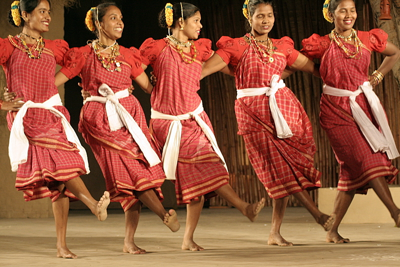

Exploring India's Culture and Heritage
Classical Dance Forms of India
Fugdi is a traditional folk dance performed by women in the Indian state of Goa and parts of Maharashtra, especially among the Konkani-speaking communities. It is an energetic and vibrant dance that holds cultural and ritual significance. Fugdi is usually performed during religious festivals, village celebrations, and special occasions like Ganesh Chaturthi, symbolizing joy, devotion, and togetherness.
Fugdi is a traditional folk dance performed by women in the Indian state of Goa and parts of Maharashtra, especially among the Konkani-speaking communities. It is an energetic and vibrant dance that holds cultural and ritual significance. Fugdi is usually performed during religious festivals, village celebrations, and special occasions like Ganesh Chaturthi, symbolizing joy, devotion, and togetherness.
Fugdi is a dance form that represents the spirit of community bonding among women. Traditionally, it served as a recreational activity for women during breaks from daily chores or during the monsoon season, when agricultural work was less demanding. It is also closely associated with Ganesh Utsav, where women perform Fugdi as a devotional offering to Lord Ganesha. Through rhythmic movement and song, the dance allows women to express their emotions, share stories, and connect socially.
Fugdi is performed in various formations such as circular (mandli) or in rows (zhanj), depending on the region and occasion. The dance starts slowly with hand claps and gradually builds up in speed and intensity. A signature element of Fugdi is the sound of "foo" made by blowing air out of the mouth in rhythmic patterns, which is also how the dance got its name. This blowing sound is timed with the dancers’ movements, creating a unique musical effect without any instruments.
Women usually wear traditional sarees tucked in a way that allows freedom of movement, along with simple jewelry and flowers in their hair. Fugdi does not rely heavily on musical instruments; instead, the rhythmic clapping, foot stomping, and the "foo" sound created by the performers act as the primary percussive elements. Occasionally, hand-held instruments like kasale (cymbals) may be used.
Used for transition in dance segments.
Involves intricate footwork.
Kuchipudi uses Hasta Mudras as codified in the Natya Shastra. These are used to convey emotion, action, objects, and more.
Asamyuta Hastas (Single-hand)
Samyuta Hastas (Double-hand)
Tarangam: The dancer performs on a brass plate while balancing a pot on the head. A display of extreme control and grace. Abhinaya: Emphasis on facial expressions and storytelling, especially from mythology (Krishna, Rama, etc.). Costumes: Bright silk sarees with stitched pleats that fan out during movement. Jewelry, flowers, and ankle bells complete the look. Music: Based on Carnatic tradition – uses mridangam, flute, veena, violin.
Bhama Kalapam – Story of Satyabhama (wife of Krishna)
Krishna Shabdam – Describing Krishna’s leelas
Dasavataram – The ten incarnations of Vishnu